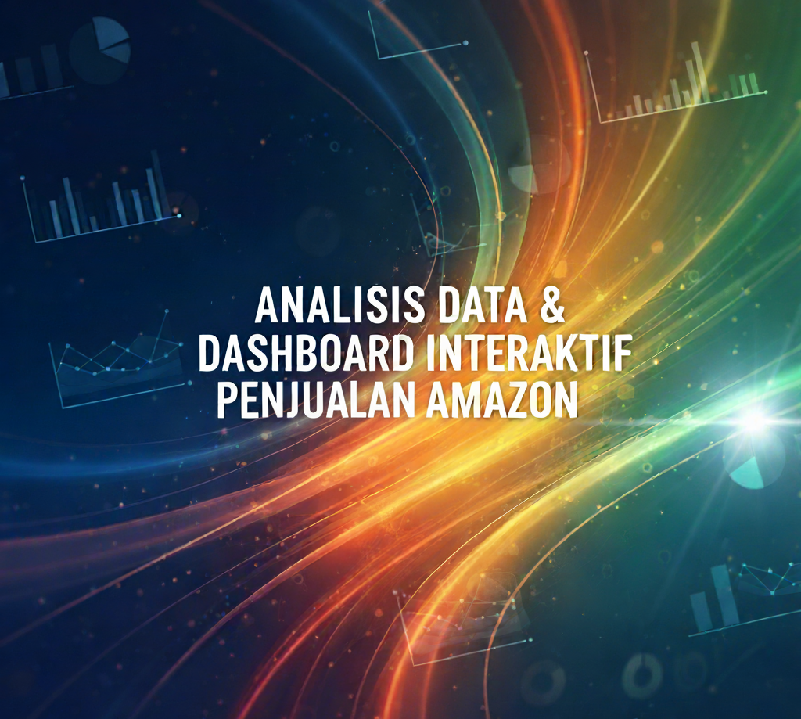
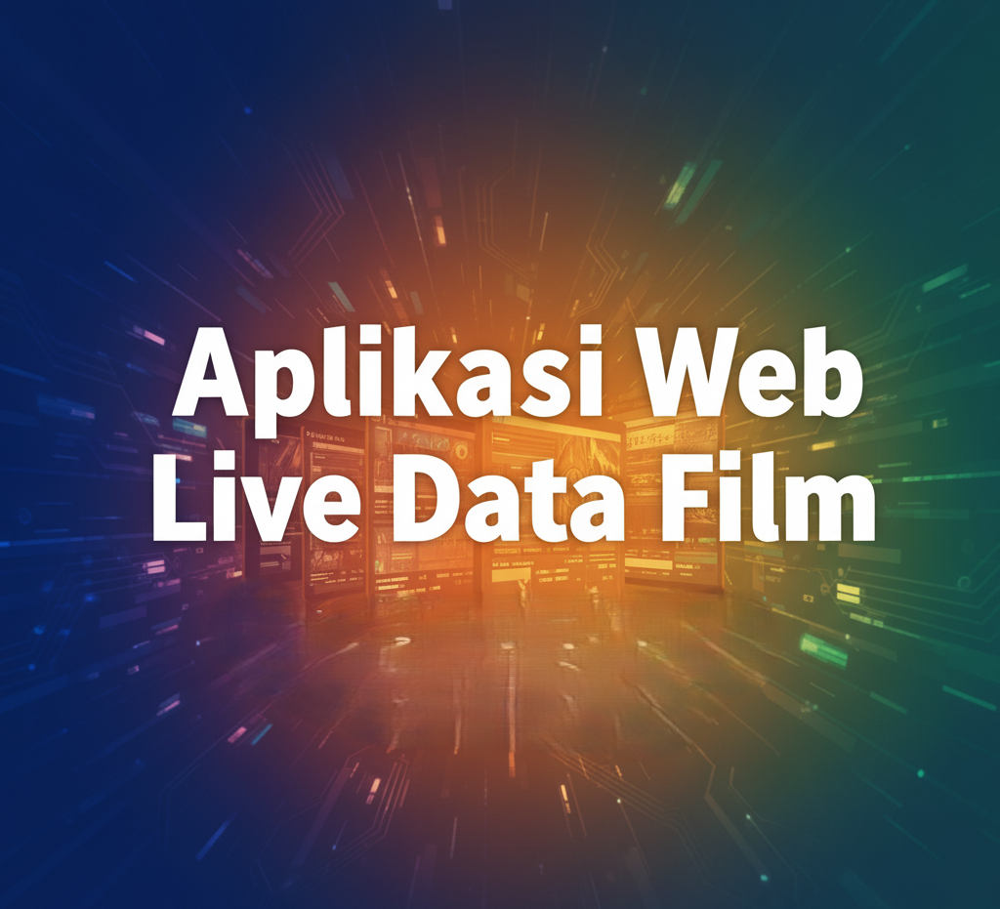

Hello, I'm
Mochamad Rafli Mudji Prasetyo
Recent Graduate in Information Systems
As a recent Information Systems graduate from Bina Nusantara University, I am skilled in transforming complex data into actionable insights. With a strong background in data analysis, business intelligence, and technology consulting, I am enthusiastic about applying my skills to solve challenging business problems and drive innovation and efficiency within your company.

About Me
A recent Information Systems graduate from Bina Nusantara University with a strong foundation in data analysis and technology consulting. Proficient in data cleaning, analysis, and business intelligence, with the ability to transform complex data into actionable insights. Skilled in process optimization and problem-solving. Passionate about leveraging analytical skills, effective communication, and technology-driven solutions to drive innovation and efficiency.
Professional & Organizational Experience
Work Experience
Jan 2024 - Present
Freelance Tax Invoice
PT. CPA GLOBAL KREASI
• Prepared and issued electronic tax invoices (coretax) in compliance with Indonesian VAT regulations.
• Verified the accuracy of NPWP, VAT rates, and supporting documents before invoice issuance.
• Compiled monthly VAT reports and supported timely tax return submissions.
• Coordinated with internal teams to ensure smooth tax documentation and reporting processes.
Nov 2024 - Present
Freelance Tax Invoice
PT. Wujud Ragam Gemilang
• Prepared and issued electronic tax invoices (coretax) in compliance with Indonesian VAT regulations.
• Verified the accuracy of NPWP, VAT rates, and supporting documents before invoice issuance.
• Compiled monthly VAT reports and supported timely tax return submissions.
• Coordinated with internal teams to ensure smooth tax documentation and reporting processes
March 2025
Event Staff (VIV Asia 2025)
PT. Permata Wacana Lestari
• Served as administrative staff and field interpreter during the international event VIV Asia 2025.
• Facilitated communication between Indonesian delegates and international participants.
• Assisted with event documentation and supported technical coordination on-site.
Sep 2023 - Feb 2024
Business Intelligence Analyst Intern
PT. Xapiens Teknologi Indonesia
• Assisted the ERP division in data cleaning and preparation, improving accuracy and efficiency.
• Used statistical techniques and visualization tools to identify key trends in company data.
• Developed predictive models that enhanced forecast accuracy.
• Supported ISO/IEC 27001 and ISO 9001 certified processes for data management.
July 2022
Event Staff (Indonesia Agriculture Competition 2022)
PT. Permata Wacana Lestari
• Worked as administrative staff and interpreter for a national agricultural competition.
• Managed participant data, documented event activities, and supported event operations.
• Ensured effective communication between participants and organizers from various regions.
Organization Experience
Jan 2024 - Mar 2024
Notetaker
ringantangan_
Supported the organization's fundraising and evaluation efforts by managing a volunteer database, preparing insightful impact reports, and organizing beneficiary feedback.
Okt 2023 - Des 2023
Volunteer Teacher
Teach For Indonesia
Utilized interactive learning techniques to boost English language acquisition among middle school students.
Feb 2021 - Mei 2021
Entrepreneurship Activist
B-Preneur
Actively contributed to a student business community, focusing on the development of business and entrepreneurial skills.
Technical Skills
Python
R
SQL
Java
Power BI
Tableau
Oracle ERP
MS Excel
Project
Data Cleaning and Analysis Project
Sep 2023 - Feb 2024
• Developed a systematic approach to identify and address data quality issues.
• Collaborated with cross-functional teams to understand and meet various departmental data requirements.
Business Intelligence Dashboard Development
Sep 2023 - Feb 2024
• Integrated data from multiple sources to provide a comprehensive view of business performance.
• Collaborated with business units to identify critical metrics and design intuitive visualizations.

WAREHOUSEKU.ID (University Project)
Prototyped a software solution to optimize warehouse workflows, featuring real-time inventory tracking and efficient logistics management to drive maximum operational efficiency.
Lihat Prototipe →
Mindful (University Project)
Mindful is an Application for Meditation . This application will be built on the Android platform and iOS. This application is design for users who are looking for peace mentally and physically.
Lihat Prototipe →
RideShare.Id (Personal Project)
This application will be built on the Android platform and iOS. This application is design for customer to distribute ojek services that have been registered.
Lihat Prototipe →
Redesign Website PT. Tirta Pasifik (Personal Project)
Revitalized the corporate website to strengthen brand image and optimize the user experience (UX).
Lihat Proyek →
Analisis Data & Dashboard Interaktif Penjualan Amazon (Personal Project)
Designed an interactive Tableau dashboard to analyze Amazon sales data, translating complex datasets into actionable insights on sales performance, product trends, and customer sentiment..
Lihat Dashboard →
Aplikasi Web Live Data Film (Personal Project)
Membangun aplikasi web full-stack dari awal yang menampilkan data film populer secara live dari The Movie Database (TMDb). Backend dibuat dengan Python & Flask, sementara frontend menggunakan JavaScript untuk mengambil data secara dinamis dan menampilkannya di galeri yang responsif. Aplikasi ini di-deploy di server cloud PythonAnywhere..
Lihat Website →Education & Certifications
Education
Bina Nusantara University
Bachelor of Science
Sep 2020 - Aug 2025 | GPA: 3.05
Certifications
•Data Analytics - Technical Skills Series
•Data Analytics - Soft Skill Series
•AWS Certified Cloud Practitioner (In Progress)
Get in Touch
Open to discussing new opportunities, interesting projects, and exchanging ideas. Reach out anytime.